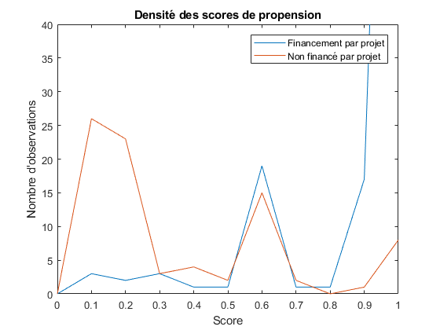

Contents
clc clear
1. Préparation des données
% Charger la base de données [Data,VarLabel] = xlsread('Dataset.xls'); % Créer la matrice capacity^2 et l'ajouter aux données CapacityScaled = Data(:,17) / (2*std(Data(:,17))); CapacityScaled2 = CapacityScaled.^2; Data = [Data CapacityScaled CapacityScaled2]; VarLabel = [VarLabel, "CapacityScaled", "CapacityScaled^2"]; clear CapacityScaled CapacityScaled2 % Générer la variable capex/opex CapexOpexNorm = zeros(size(Data,1),1); for i = 1:length(Data) if Data(i,14)==1 CapexOpexNorm(i,1)= .187; elseif Data(i,13)==1 CapexOpexNorm(i,1) = 0.179; elseif Data(i,15)==1 CapexOpexNorm(i,1) = 0.116 ; elseif Data(i,10)==1 CapexOpexNorm(i,1) = 0.694 ; elseif Data(i,11)==1 CapexOpexNorm(i,1) = 0.543 ; elseif Data(i,12)==1 CapexOpexNorm(i,1) = 1.430 ; end end Data = [Data CapexOpexNorm]; VarLabel = [VarLabel, "CapexOpex"]; clear CapexOpexNorm i %Générer les variables d'interactions Big4NoMerchantRisk = Data(:,18) .* (1- Data(:,3)); CapacityMerchantRisk = Data(:,25) .* Data(:,3); Data = [Data Big4NoMerchantRisk CapacityMerchantRisk]; VarLabel = [VarLabel, "Big4NoMerchantRisk", "CapacityMerchantRisk"]; clear Big4NoMerchantRisk CapacityMerchantRisk % Comme la variable SponsorFinancialInvestor prédit Y parfaitement on l'élimine de la régression avec 49 observations x = Data(:,[1 25 26 3 11 18 19 20 21 22 23 24 2]); x(x(:, 11)== 1, :)= []; x(:,11) = []; % Créer les variable et on effectue le logit y=x(:,1); x(:,1) = []; coef = logit(y,x);
2. Calcul du score de propension
% On ajoute une colonne de un pour la constante et on calcule le score de % propension en transformant le log de vrai-semblance en probabilité. % y = log ( p / ( 1 - p ) ) donc: e^score / ( e^score + 1 ) x_0 = ones(size(x,1),1); x = horzcat(x_0, x); coef = coef'; pscore = coef .* x; pscore =sum(pscore,2); pscore = exp(pscore); pscore = pscore./(pscore+1) clear x_0 escore coef % Pour l'exercice, on génère aussi une variable qui représente le taux % d'intérêt obtenu par les projets. Le taux est de 3 à 8 %. n = size(x,1); int = (rand(n,1)*5)+3; % On ajoute le score aux données, on crée les groupes traité et non % traité x(:,1) = []; x = [y x int pscore]; xt = x; xt(xt(:, 1)== 0, :)= []; xnt = x; xnt(xnt(:, 1)== 1, :)= []; clear score n int
pscore =
0.9839
0.9463
0.9551
0.0667
0.0638
0.9452
0.9442
0.9526
0.0743
0.0897
0.9849
0.9494
0.9561
0.1110
0.9828
0.9836
0.9840
0.9450
0.9841
0.9833
0.3355
0.0868
0.6163
0.5329
0.2149
0.2123
0.5101
0.9466
0.9537
0.9830
0.5746
0.9833
0.9840
0.9439
0.8210
0.5743
0.9509
0.9830
0.5864
0.3852
0.8235
0.5782
0.5886
0.5743
0.9975
0.9830
0.9435
0.9441
0.8301
0.5882
0.9527
0.9446
0.9470
0.9830
0.5825
0.5079
0.9448
0.9489
0.9443
0.9847
0.9837
0.9836
0.9834
0.8236
0.9450
0.9833
0.9692
0.9831
0.9830
0.9830
0.9828
0.9828
0.9828
0.9443
0.2137
0.5786
0.9450
0.3938
0.9452
0.9977
0.1292
0.9837
0.9830
0.9526
0.9831
0.9833
0.9833
0.0897
0.3315
0.9463
0.9845
0.5050
0.9840
0.1229
0.9838
0.9459
0.5752
0.9440
0.9852
0.0671
0.0671
0.9471
0.9435
0.9830
0.9878
0.9841
0.0421
0.9835
0.9840
0.9832
0.9835
0.0980
0.0386
0.9843
0.5488
0.7519
0.9450
0.9835
0.9833
0.9847
0.5746
0.9830
0.8259
0.9441
0.9976
0.9441
0.1582
0.9830
0.9850
0.9857
0.8609
0.9448
0.9829
0.1109
0.5069
0.5746
0.9705
0.0878
0.9836
0.8236
0.9006
0.8418
0.8422
0.9467
0.9871
0.9828
0.1029
0.1169
0.8241
0.1574
0.9451
0.1572
0.6392
0.5323
0.8320
0.1125
0.5767
0.1347
0.9828
0.5611
0.9689
0.2867
0.4829
0.5807
0.5719
0.5719
0.0806
0.5793
0.5788
0.0904
0.8210
0.5726
0.0879
0.5736
0.8479
0.9436
0.9493
0.9439
0.1172
0.9482
0.9457
0.9448
0.9471
0.0896
0.9451
0.0074
0.0074
0.9438
0.9466
0.9458
0.9452
0.9449
0.9448
0.9074
0.3558
0.1253
0.9436
0.9435
0.9462
0.9460
0.5061
0.9460
0.9478
0.9449
0.9475
0.9459
0.8400
0.9463
0.9470
0.9463
0.5745
0.9467
0.5846
0.9450
0.1262
0.9439
0.8837
0.0956
0.9437
0.9438
0.6378
0.9828
0.9466
0.0883
0.0831
0.9443
0.9478
0.1186
0.9975
0.9443
0.9451
0.9453
0.9456
0.0873
0.1210
0.1210
0.9447
0.1925
0.1083
0.9443
0.9452
0.0852
0.9458
0.9456
0.9471
0.9473
0.9452
0.9452
0.9439
0.9436
0.9049
0.2500
0.9447
0.9440
0.9438
0.9435
0.0975
0.8461
0.1458
0.9463
0.2253
0.0914
0.9474
0.9458
0.9442
0.5717
0.0896
0.4749
0.1169
0.9735
0.1465
0.0306
0.8611
0.1136
0.5122
0.9054
0.1255
0.1255
0.5830
0.9077
0.0729
0.9835
0.0885
0.8415
0.9465
0.9832
0.4749
0.9435
0.9490
0.9441
0.9435
0.9835
2. Validation du support commun
Créer un graphique de la région de suppot commun des scores de propension
% Créer une matrice des densités n_t = size(xt,2); n_nt = size(xnt,2); d = zeros(1,11); for i = 2:11 d(i)=d(i-1)+.1; end dt = zeros(1,11); for i=2:11 dt(i)= sum(xt(:,n_t)>d(i-1) & xt(:,n_t)<d(i)); end dnt = zeros(1,11); for i=2:11 dnt(i)= sum(xnt(:,n_nt)>d(i-1) & xnt(:,n_nt)<d(i)); end % Puis le graphique de support commun figure(1) plot(d,dt,d,dnt) xlim([0 1]) ylim([0 40]) title('Densité des scores de propension') legend('Financement par projet','Non financé par projet') xlabel('Score') ylabel("Nombre d'observations") clear d dt dnt % Finalement, on élimine les observations hors de la zone de support commun n_t=size(xt,2); n_nt=size(xnt,2); minxt = min(xt(:,n_t)); maxxnt = max(xnt(:,n_nt)); xt(xt(:, n_t)> maxxnt, :)= []; xnt(xnt(:, n_nt)< minxt, :)= []; clear n n_t n_nt minxt maxxnt
3. Qualité du score de propension
On vérifie s'il existe des différences significatives entre les groupes traité et non traité pour les caractéristiques employés
% Calcul des moyennes n=size(xt,2); meant = zeros(n-1,1); for i = 1:(n-1) meant(i) = mean(xt(:,i+1)); end n=size(xnt,2); meannt = zeros(n-1,1); for i = 1:(n-1) meannt(i) = mean(xnt(:,i+1)); end %Calcul des variances n=size(xt,2); vart = zeros(n-1,1); for i = 1:(n-1) vart(i) = var(xt(:,i+1)); end n=size(xnt,2); varnt = zeros(n-1,1); for i = 1:(n-1) varnt(i) = var(xnt(:,i+1)); end moyenne = [meant vart meannt varnt]; m = size(moyenne,1); mt = size(xt,1); mnt = size(xnt,1); tstat = zeros(m,1); for i = 1:m tstat(i) = abs((moyenne(i,1)-moyenne(i,3))/sqrt((moyenne(i,2)/mt)+(moyenne(i,4)/mnt))); end Comparaison = table(meant , vart , meannt , varnt , tstat); Comparaison.Properties.VariableNames = {'Moyenne_T' 'Variance_T' 'Moyenne_NT' 'Variance_NT' 'T_stat'} clear n m mt mnt meant meannt vart varnt tstat i moyenne
Comparaison =
13×5 table
Moyenne_T Variance_T Moyenne_NT Variance_NT T_stat
_________ __________ __________ ___________ ________
0.10498 0.077342 0.23413 0.16928 2.4295
0.087889 0.30445 0.22175 0.58075 1.343
0.04908 0.046959 0.55556 0.25039 8.2534
0.02454 0.024085 0.083333 0.077465 1.6807
0.03681 0.035674 0.16667 0.14085 2.7844
0.22086 0.17314 0.38889 0.241 2.5304
0.067485 0.063319 0.069444 0.065532 0.054383
0.6135 0.23858 0.083333 0.077465 10.52
0.042945 0.041354 0.36111 0.23396 5.3756
0.10429 0.093994 0.013889 0.013889 3.2589
0.092025 0.084072 0.097222 0.089006 0.12418
5.4449 1.8522 5.6151 2.1356 0.83998
0.84571 0.043045 0.34996 0.085056 13.039
4. Effectuer l'appariement
% Effectuer l'appariement par plus proche voisin % Chaque observation du groupe traité est appareilée avec l'observation la plus proche du groupe non traité n_xt = size(xt,2); n_xnt = size(xnt,2); % Créer un index des match S_T = xt(:,n_xt); S_NT = xnt(:,n_xnt); A = repmat(S_NT,[1 length(S_T)]); [Minv,IndexVoisin] = min(abs(A-S_T')); % Créer une matrice des taux d'intérêt des traité en colonne 1 % et des pairs non traité en colonne 2 i_traite = xt(:,n_xt-1); i_nt = xnt(:,n_xnt-1); i_ntmatch = i_nt(IndexVoisin); % Calculer l'effet moyen de traitement qui est la différence moyenne entre % le taux d'intérêt des observations en financement par projet comparé à % leur pairs qui ne sont pas en financemnet par projet effet_traitement = mean(i_traite - i_ntmatch) clear n_xt n_xnt Minv i_traite i_nt i_ntmatch S_T S_NT A IndexVoisin
effet_traitement =
0.7540
%Note : On obtient un effet moyen de traitement différent à chaque fois %puisque le taux d'intérêt est généré aléatoirement entre 3 et 8%